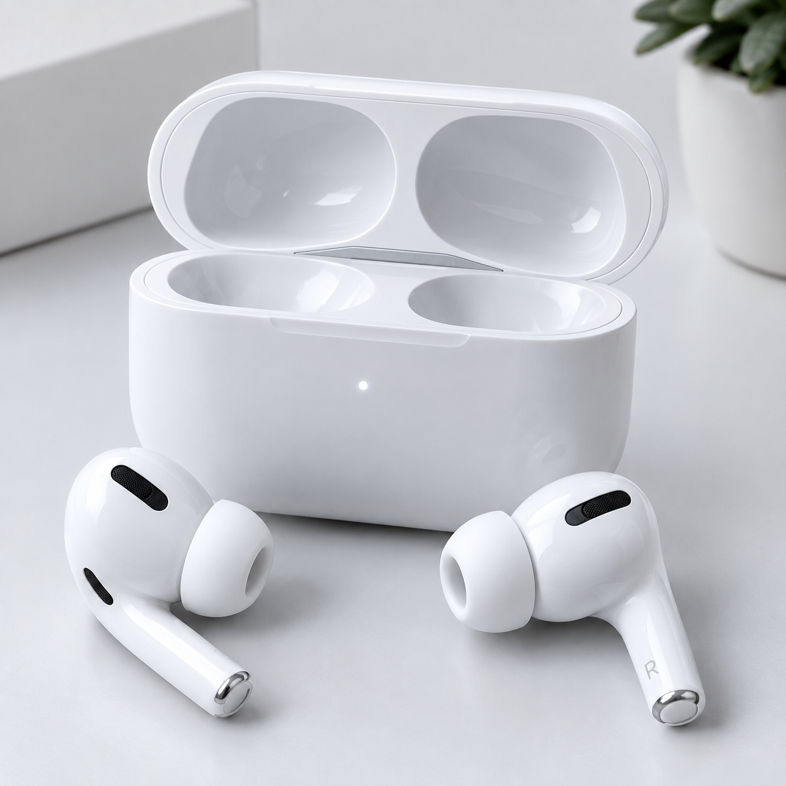
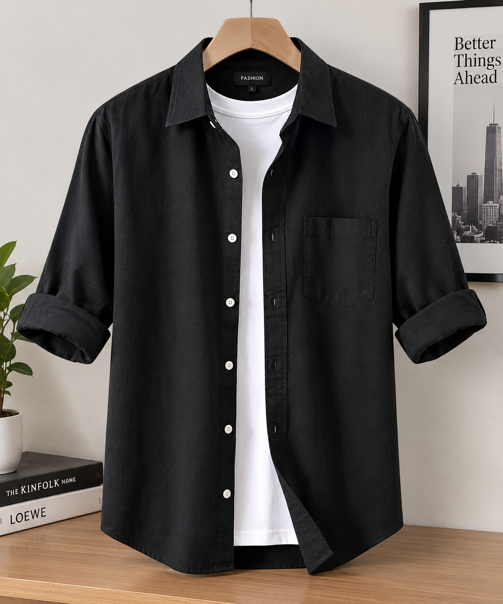

COMIDA · UNIVERSIDAD
Postres y repostería
Una idea dulce puede convertirse en un proyecto para compartir dentro de la comunidad universitaria.


Descubre ejemplos de productos, servicios y proyectos que estudiantes podrían compartir con su comunidad universitaria.
Estas imágenes son demostrativas. Cada estudiante podría organizar su oferta en una publicación con foto, descripción y contacto.
Una idea dulce puede convertirse en un proyecto para compartir dentro de la comunidad universitaria.
Comparte productos prácticos y encuentra personas interesadas en tu campus.



Muestra prendas y complementos creados o elegidos por estudiantes emprendedores.



Presenta una propuesta digital con una descripción clara y fácil de compartir.